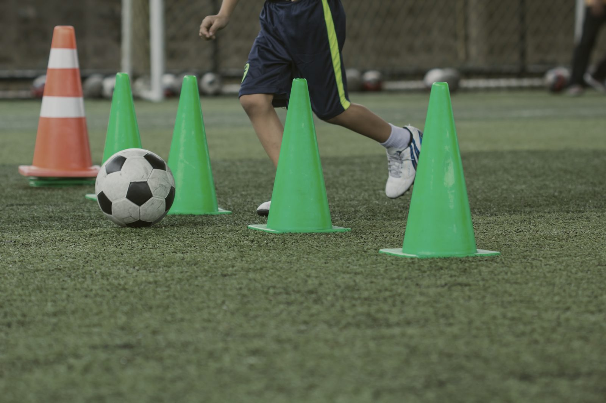

育成・強化
育成コンセプト「長野スタイル」、トレセン・強化の活動、指導者・審判の養成、選手・チーム登録の手続きをまとめています。
長野スタイル（育成コンセプト）
長野県の育成コンセプト『長野スタイル』を提案します。各年代で獲得すべきもの、プレーモデルとしてまとめました。
2028年国民スポーツ大会優勝に向け指導者のベクトルを合わせ、長野県サッカーを向上させていきましょう。


指導者ライセンス
技術委員会では、サッカーの指導に関心がある方を対象に、レベルに応じた指導者講習会を開催しています。10歳以下のこどもの指導方法を学ぶ「キッズリーダー講習会」や、こどもから大人までアマチュア選手の指導法を学ぶ「C級（D級）コーチ養成講習会」を県内4地区で開催しています。
| 講習会 | 開催日数・内容 | 受講資格 |
|---|---|---|
| Bライセンス | 集合講習 前期6日間・後期5日間・試験3日間。間の学習として日常での指導の積み上げ、e-ラーニングによる共通科目の受講があります。 | 有効なCライセンスコーチ資格を保有／受講年の4月1日現在で満20歳以上／Bライセンストライアル（C級スキルアップ研修）もしくはそれに準ずる研修等を受講している者 |
| Cライセンス | 8日間（原則土日祝日開催。コースによっては増える場合があります）。基礎的なゲーム分析、トレーニングプランの作成、トレーニングセッションをグループで実践します。 | 受講年度の4月1日現在で満15歳以上／県内および地域にて活動しているクラブやスポーツ教室で実際に指導にあたっている指導者およびこれから指導者になろうとする者 |
| Dライセンス | 1日（平日夜間等を利用し2〜3日で行うコースもあります）。特に12歳以下の子どもたちへのサッカー指導の考え方に触れます。 | |
| キッズリーダー | 実技1.5時間・講義1.5時間。キッズ（U-6・U-8・U-10）を対象とした、サッカーを含む身体を動かすことの指導にあたる指導者を養成します。 | 当年3月31日現在に満16歳以上／各自で障害保険に加入済みである方 |
リフレッシュ研修会（資格の更新）
S級・A級・B級・C級を保有されている方は、リフレッシュ研修会でリフレッシュポイントを獲得できます。保有資格の更新のためには、決められた期間内に次のポイントを獲得する必要があります。ゴールキーパーの指導に関わる指導者を対象とした研修会も開催しています。
| 級 | 獲得期間 | 必要ポイント |
|---|---|---|
| S級コーチ | 2年間 | 40 |
| A級ジェネラル | 4年間 | 40 |
| A級U-12 | 4年間 | 40 |
| B級コーチ | 4年間 | 40 |
| C級コーチ | 4年間 | 40 |
獲得状況は KICKOFF（指導者 → 基本情報 → リフレッシュポイント確認・申請）で確認できます。JFA公認ゴールキーパーC級養成講習会はJFAが開催しています。
審判資格
長野県サッカー協会、あるいはその傘下にあるサッカー協会の主催するサッカーやフットサルの試合の審判を務めるためには、それぞれ審判員という資格が必要です。
| 級 | 認定 |
|---|---|
| 4級・3級 | 長野県サッカー協会 |
| 2級 | 北信越サッカー協会 |
| 1級・女子1級（サッカーのみ） | 日本サッカー協会 |
1級の中から実績により毎年JリーグやFリーグ担当審判員が、さらに国際試合を担当することができる国際審判員が推薦されます。
資格の取得と更新
新規審判資格を取得するには、「新規講習会」を受講していただきます。長野県内でのサッカーおよびフットサル4級取得講習会、3級昇級講習会は、審判委員会のお知らせにて随時ご案内しています。
4級審判員の更新講習会は、JFAラーニングをご利用ください。ユース限定の4級取得講習会を1月から2月の期間に開催しています。
審判セミナーは、「審判技術の向上を図る」「審判員・指導者等の交流を図る」ことを目的に、毎月1回、長野県フットボールセンター、北信地区で開催しています。審判セミナーについて
選手・チーム登録
登録はWeb登録システム「KICKOFF」で行います
JFA主催大会や北信越地域／長野県の各種大会へ出場するためには、JFAへのチーム登録および選手登録が必要になります。JFA IDをお持ちでない方は、新規で取得してからKICKOFFシステムにログインしてください。既にJFA IDをお持ちの方は、新たに取得しないようご注意ください。
登録の種類
サッカー・フットサル登録
チーム登録・選手登録。1チームにつき最大3名（登録責任者と代理2名）がKICKOFFで各種手続きを行えます。不測の事態に備え、登録担当者を複数名登録してください。
詳しく見る指導者登録
所定のカリキュラムを受講し、認定試験に合格した指導者は、JFAに指導者登録することによってJFA認定ライセンス（資格）指導者となります。
詳しく見る審判登録
審判員および審判インストラクターに講習会を受けていただくとともに、それぞれのライセンス（資格）への登録を進めています。
詳しく見る- 2018年度から選手証・監督証は完全電子化されています。サッカー／フットサルのいずれも選手証・監督証は発送されません。
- 2020年度より「（書式第12号）クラブ申請」は、Googleフォームによる Web からの申請に変更になりました。
- 選手を追加・情報変更する際の必要書類は、電子ファイルとして添付できます（アップロードファイルのサイズ制限は2MB）。
登録費
| 公認S級コーチ | 10,000円／年 |
|---|---|
| 公認A・B・C級コーチ | 5,000円／年 |
| 公認D級コーチ・キッズリーダー | 3,000円／年（キッズリーダーの登録は任意） |
| 1級 | 22,000円／年 |
|---|---|
| 女子1級 | 14,000円／年 |
| 2級 | 8,000円／年 |
| 3級 | 一般 6,000円／年・ユース 1,500円／年 |
| 4級 | 一般 4,500円／年・ユース 1,000円／年 |
| 1級 | 13,000円／年 |
|---|---|
| 2級 | 8,000円／年 |
| 3級 | 一般 6,000円／年・ユース 1,500円／年 |
| 4級 | 一般 4,500円／年・ユース 1,000円／年 |
| S1級 | 12,000円／年 |
|---|---|
| F1級 | 11,000円／年 |
| 2級 | 7,000円／年 |
| 3級（一般） | 6,000円／年 |
マニュアル・FAQ
- PDF利用者共通マニュアル2.8MB
- PDFJFA ID 本人写真登録操作イメージ【長野県版マニュアル】
- PDF審判マニュアル2.18MB
- WEB各種申請 ダウンロード（JFA）
- WEBJFA FAQ TOP
- WEBJFA ID FAQ
- WEBKICKOFF全般FAQ
- WEB審判／指導者FAQ
- WEB各種マニュアル（JFA）
- WEBJFA ID 取得手順マニュアル動画
KICKOFFに関するお問い合わせ
KICKOFF・JFA IDに関するお問い合わせの営業時間等は、JFAサイトにてご確認ください。